目次 > ゲームについて > 日本Falcom 攻略 > ZWEI II > 攻略チャート > エンディングまで
らんの眼
ZWEI II (ツヴァイ 2、ZWEI II Plus)
| 概要 | 情報 | 攻略チャート |
| フード交換 | ペットについて | ボス戦 |
| 敵キャラ一覧 | ハンターランク | G-コロッセオ |
| アイテム一覧 | ガジェット一覧 | トレジャー一覧 |
| ダンジョン一覧 | クリアデータ特典 | Plusの追加要素 |
| ZWEI II攻略へ | 目次へ戻る |
| [ ～オルディウム神殿ボス ] [ ～アウロン大鉄塔ボス ] [ ～星降りの里 ] [ ～エンディング ] |
| 星ヶ峰ボス戦まで |
| 「吹雪ヶ原(LV.18)」を突破し、「Eパーツ」を入手 アルッテ飛行場のガシュレー親方にアンカーギアを改造してもらい、「グライドギア」を入手 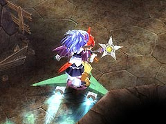 「剣の参道(LV.18)」を突破 ガルガリオン戦 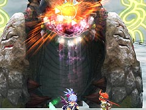 エクスマキナとのイベント 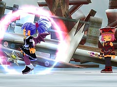 (おまけ) 「G-コロッセオ」でオデッサとのイベント 金闇の森で妖精のイベント アウロン大鉄塔で呼び込みペンギンのイベント 「星降りの里」でアルウェンを操作中に温泉に行くと、アルウェンの入浴シーンが見られる(万歩計を表示し、歩数が60000 歩を越えている必要があります) 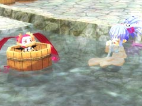 |
| ルナ＝ムンドゥスボス戦まで |
| テンザンとのイベント フィオナ(フィオナの屋敷)、ピピロ(アルッテの町)、魔女ラーライラ(魔女の家)に話しかける クリスタルバレーに行く 魔女ラーライラに話しかけ、ルナ＝ムンドゥスへ通じる扉を開く 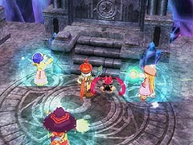 「月の回廊(LV.20)」を突破 ダークアルウェン戦 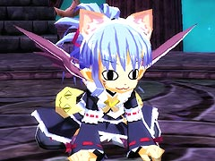 アルウェンのイベント 「駒の王都(LV.22)」を突破 真・ダイガルド戦 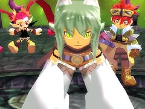 「封印庭園(LV.24)」を突破 ザハール戦 真・ザハール戦 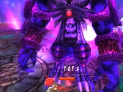 「常闇の魔法」を入手 テルミドールとのイベント 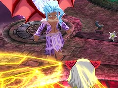 フィオナの屋敷でのイベント (おまけ) 「星降りの里」のヒサクから「鷹の彫物」を入手 「大熊猫楼」にいる呼び込みペンギンが「栗ようかん」をくれる 懺悔室でモーリスのイベント アネットの店の品揃えが増える トレジャーの「キャプテン21号」のパーツが全て揃うと、「カラクリ」がペットになる 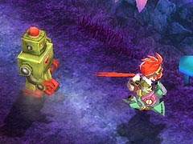 真・ダイガルド戦前に「星降りの里」へ行くと、オデッサの入浴シーンが見られる(万歩計を表示し、歩数が60000 歩を越えている必要があります) 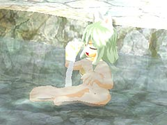 |
| エンディングまで |
| ブランデーヶ丘にいるミリアムに話しかけ、螺旋要塞メルセデクへ突入 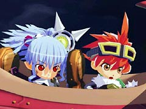 「機甲回廊(LV.26)」を突破 真・テルミドール戦 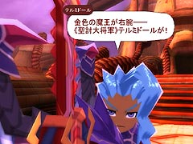 「螺旋中枢(LV.28)」を突破 メルセデク・コア戦 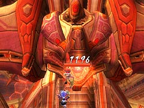 魔王ルシアン戦 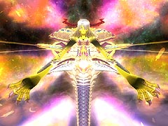 テルミドールとのイベント 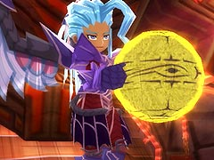 (おまけ) 空港で主要メンバーとのイベント 金闇の森に妖精の店が開店 クリスタルバレーでモンブランのイベント 各地にあるレベル99 のダンジョンへ行けるようになる 「鷹の彫物」から色々と交換していくと、「Fパーツ」を入手でき、これを使いアンカーギアを改造することで「ブレードギア」を入手 ラグナ送別イベント 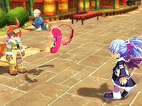 アルッテ飛行場へ移動 エンディング 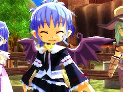 (おまけ) クリスタルバレーでモンブランのイベント ブランデーヶ丘でミアのイベント |
| [ ～オルディウム神殿ボス ] [ ～アウロン大鉄塔ボス ] [ ～星降りの里 ] [ ～エンディング ] |
| 概要 | 情報 | 攻略チャート |
| フード交換 | ペットについて | ボス戦 |
| 敵キャラ一覧 | ハンターランク | G-コロッセオ |
| アイテム一覧 | ガジェット一覧 | トレジャー一覧 |
| ダンジョン一覧 | クリアデータ特典 | Plusの追加要素 |
| ページの上部へ | ZWEI II 攻略へ | 目次へ戻る |